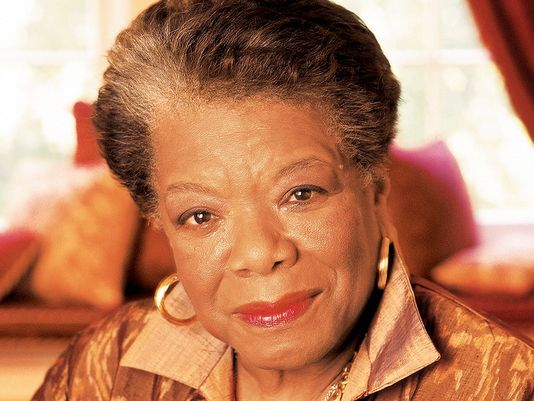
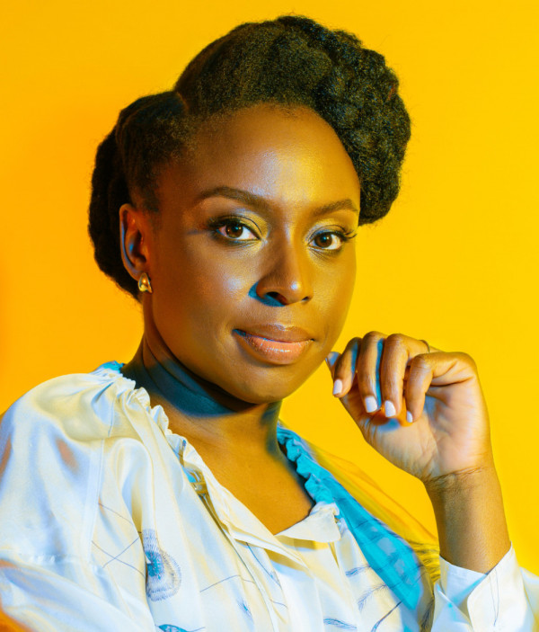
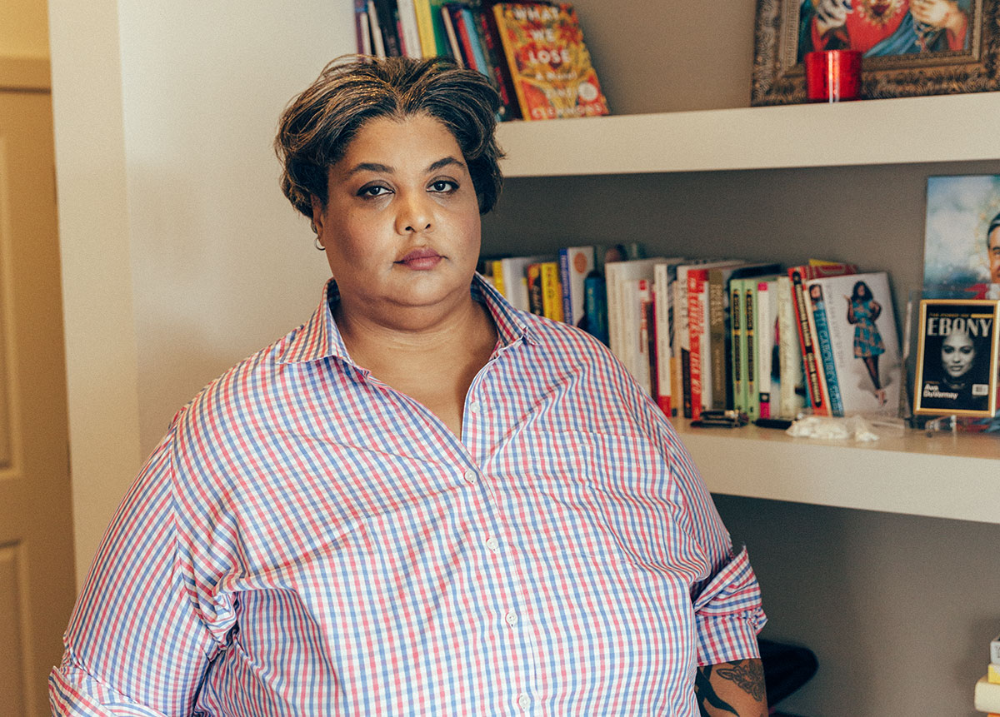
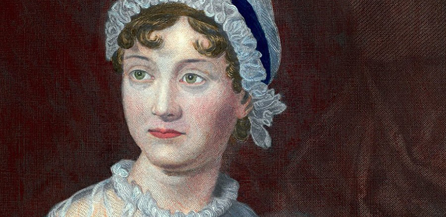

bell hooks

About:
bell hooks is an American author, professor, feminist, and social activist.
hooks' writing has focused on the intersectionality of race, capitalism, and gender, and what she describes as their ability to produce and perpetuate systems of oppression and class domination. She has published over 30 books and numerous scholarly articles, appeared in documentary films, and participated in public lectures. She has addressed race, class, and gender in education, art, history, sexuality, mass media, and feminism.
Key Works:
- Feminist Theory: From Margin to Center
- All About Love: New Visions
- Ain't I a Woman?: Black Women and Feminism
- Feminism is for Everybody
Simone de Beauvoir

About:
Simone de Beauvoir was a French writer, intellectual, existentialist philosopher, political activist, feminist and social theorist. Though she did not consider herself a philosopher, she had a significant influence on both feminist existentialism and feminist theory.
De Beauvoir wrote novels, essays, biographies, autobiography and monographs on philosophy, politics and social issues. She was known for her 1949 treatise The Second Sex, a detailed analysis of women's oppression and a foundational tract of contemporary feminism; and for her novels, including She Came to Stay and The Mandarins.
Key Works:
- The Second Sex
- Woman Destroyed
Betty Friedan

About:
Betty Friedan was an American feminist writer and activist. A leading figure in the women's movement in the United States, her 1963 book The Feminine Mystique is often credited with sparking the second wave of American feminism in the 20th century. In 1966, Friedan co-founded and was elected the first president of the National Organization for Women (NOW), which aimed to bring women "into the mainstream of American society now [in] fully equal partnership with men."
Regarded as an influential author and intellectual in the United States, Friedan remained active in politics and advocacy until the late 1990s, authoring six books.
Key Works:
- The Feminine Mystique
Maya Angelou
About:
Maya Angelou was an American poet, singer, memoirist, and civil rights activist. She published seven autobiographies, three books of essays, several books of poetry, and is credited with a list of plays, movies, and television shows spanning over 50 years. She received dozens of awards and more than 50 honorary degrees. Angelou is best known for her series of seven autobiographies, which focus on her childhood and early adult experiences. The first, I Know Why the Caged Bird Sings (1969), tells of her life up to the age of 17 and brought her international recognition and acclaim.
With the publication of I Know Why the Caged Bird Sings, Angelou publicly discussed aspects of her personal life. She was respected as a spokesperson for black people and women, and her works have been considered a defense of black culture. She made a deliberate attempt to challenge the common structure of the autobiography by critiquing, changing and expanding the genre. Her books center on themes such as racism, identity, family and travel.
Key Works:
- I Know Why the Caged Bird Sings
- And Still I Rise
- Phenomenal Woman
Alice Walker

About:
Alice Walker is an American novelist, short story writer, poet, and activist. She wrote the novel The Color Purple (1982), for which she won the National Book Award for hardcover fiction, and the Pulitzer Prize for Fiction. An avowed feminist, Walker coined the term "womanist" to mean "A black feminist or feminist of color" in 1983.
Key Works:
- The Color Purple
- In Search of Our Mothers' Gardens
Audre Lorde

About:
Audre Lorde was an American writer, feminist, womanist, librarian, and civil rights activist. As a poet, she is best known for technical mastery and emotional expression, as well as her poems that express anger and outrage at civil and social injustices she observed throughout her life. Her poems and prose largely deal with issues related to civil rights, feminism, and the exploration of black female identity.
In relation to non-intersectional feminism in the United States, Lorde famously said, "those of us who stand outside the circle of this society's definition of acceptable women; those of us who have been forged in the crucibles of difference – those of us who are poor, who are lesbians, who are Black, who are older – know that survival is not an academic skill. It is learning how to take our differences and make them strengths. For the master's tools will never dismantle the master's house. They may allow us temporarily to beat him at his own game, but they will never enable us to bring about genuine change. And this fact is only threatening to those women who still define the master's house as their only source of support."
Key Works:
- Sister Outsider
- A Burst of Light: Essays
- Your Silence Will Not Protect You
- The Master's Tools Will Never Dismantle the Master's House
Chimamanda Ngozi Adichie
About:
Chimamanda Ngozi Adichie is a Nigerian novelist, writer of short stories and nonfiction.
In 2008, Adichie was awarded a MacArthur Genius Grant. She was described in The Times Literary Supplement as "the most prominent" of a "procession of critically acclaimed young anglophone authors [who] is succeeding in attracting a new generation of readers to African literature".
Key Works:
- Americanah
- We Should All Be Feminists
- The Thing Around Your Neck
- Dear Ijeawele, or A Feminist Manifesto in Fifteen Suggestions
Roxane Gay
About:
Roxane Gay is an American writer, professor, editor, and commentator.
Gay is a contributing opinion writer at The New York Times, founder of Tiny Hardcore Press, essays editor for The Rumpus, and co-editor of PANK, a nonprofit literary arts collective.
Key Works:
- Bad Feminist
- Hunger
- Not That Bad: Dispatches from Rape Culture
- Difficult Women
Judith Butler

About:
Judith Butler is an American philosopher and gender theorist whose work has influenced political philosophy, ethics and the fields of third-wave feminist, queer and literary theory.
Butler is best known for her books Gender Trouble: Feminism and the Subversion of Identity (1990) and Bodies That Matter: On the Discursive Limits of Sex (1993), in which she challenges conventional notions of gender and develops her theory of gender performativity. This theory has had a major influence on feminist and queer scholarship.
Butler has supported lesbian and gay rights movements and has spoken out on many contemporary political issues.
Key Works:
- Gender Trouble: Feminism and the Subversion of Identity
- Undoing Gender
- Bodies that Matter: On the Discursive Limits of Sex
- Precarious Life
Virginia Woolf

About:
Virginia Woolf was an English writer, considered one of the most important modernist 20th-century authors and a pioneer in the use of stream of consciousness as a narrative device.
Throughout her life, Woolf was troubled by bouts of mental illness, which included being institutionalised and attempting suicide. Her illness is considered to have been bipolar disorder, for which there was no effective intervention at the time. Eventually in 1941 she committed suicide by putting rocks in her pockets and drowning herself in a river, at the age of 59.
Woolf became one of the central subjects of the 1970s movement of feminist criticism, and her works have since garnered much attention and widespread commentary for "inspiring feminism", an aspect of her writing that was unheralded earlier. Some of her writing has been considered offensive and has been criticised for a number of complex and controversial views, including anti-semitism and elitism.
Key Works:
- A Room of One's Own
- The Waves
- Mrs Dalloway
- To the Lighthouse
Jane Austen
About:
Jane Austen was an English novelist known primarily for her six major novels, which interpret, critique and comment upon the British landed gentry at the end of the 18th century. Austen's plots often explore the dependence of women on marriage in the pursuit of favourable social standing and economic security. Her use of biting irony, along with her realism, humour, and social commentary, have long earned her acclaim among critics, scholars, and popular audiences alike.
Key Works:
- Pride and Prejudice
- Emma
- Persuasion
- Sense and Sensibility